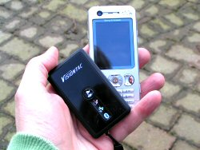
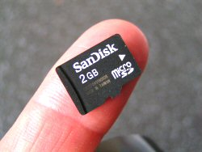

Gilbert 21 - using Visiontac / Columbus VGPS-900
In general, this device has proved to be pretty easy to look after and use in the field. It comes with a cable that enables you to charge it from a USB slot. It also comes with a converter that lets you to charge it from a standard car power socket. It is very convenient to charge by plugging it into a USB port on a computer. On a full charge, the battery will run for something like a day.
Using it in the field is easy. You can just switch it on when you leave the house and when you want to make a record you:
That's it - a record is in the making! It's so easy to use that you can make records without breaking your stride, yet alone stopping. Now you can use Gilbert 21 to make records from your Visiontac / Columbus voice tags.
It is convenient to keep the device in your pocket in a protective soft cover that comes with it. The device is really tiny - dwarfed by most mobile phones - and keeping both the device and a phone in the same pocket doesn't generally present a problem (the Visiontac's case protecting both phone and data logger).
One or two minor problems with the device have been reported and are repeated here.
Firstly several Gilbert 21 users have noticed that occasionally the voice tag is clipped or has bad sound quality. Sometimes this is bad enough that you can't make out what you recorded and so lose the record.
It seems likely that this is mostly to do with the quality of the micro-SD card - cheaper quality ones don't handle the throughput of data so well and recording sound generates a lot of data. You don't need a huge micro-SD card - a 2GB card I could probably record for a whole year on that without taking stuff off. So go for quality - and the ability to handle fast data throughput - over size.
Secondly if you make a voice tag and then create another one immediately afterwards, the new voice tag completely replaces the one you've just made. So for example if you make a tag like this 'Two Gatekeepers' and then immediately made another tag like this 'Both males', then you would lose the first and all you would have when you tried to make the record was 'Both males' which is not much use.
This appears to occur when the gap between recording is less than about 5 seconds and you haven't moved. Generally if you've waited more than about five seconds or moved more than about 5 metres, you will get both voice tags. So if you need to amend something you've said immediately, then either wait, move or replace the whole thing (e.g. in the previous example, the second tag should have been 'Correction two Gatekeepers both male').
Created with the Personal Edition of HelpNDoc: Free EPub and documentation generator